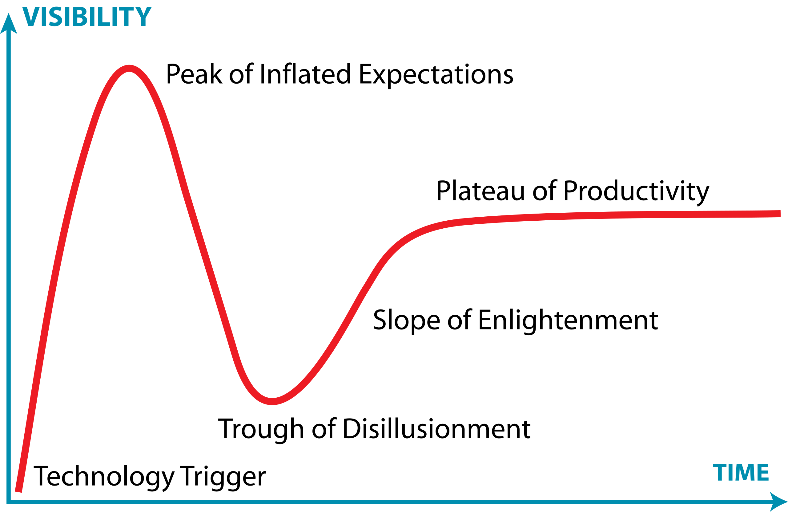
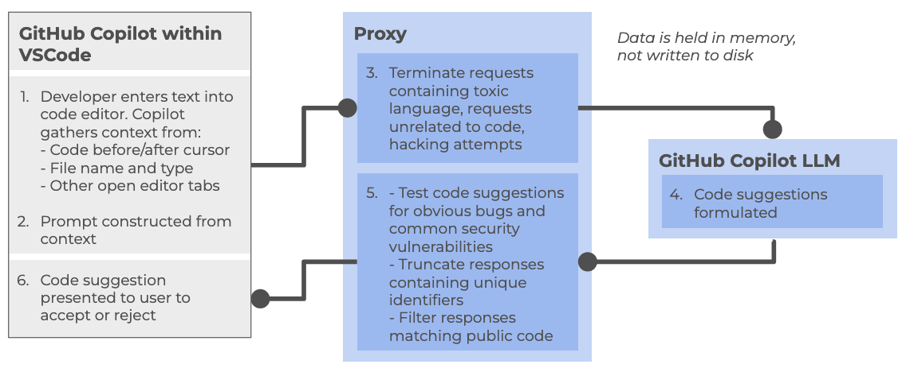
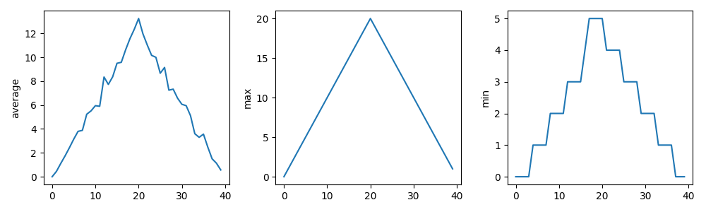
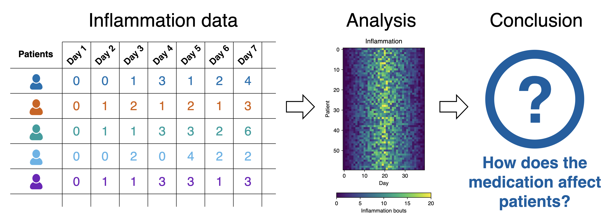
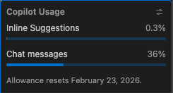

All in One View
Content from Introduction to AI-assisted Coding
Last updated on 2026-06-17 | Edit this page
Overview
Questions
- How can an AI coding assistant help development within an IDE?
- What are the mechanisms by which IDE AI assistants provide help?
- What risks arise when AI coding tools and autonomous agents are given increasing levels of autonomy?
- How can I use AI coding assistants responsibly?
- What are the main modes of AI-assisted software development, and how do they differ?
- What are the limitations of a free Copilot account?
- What is GitHub Copilot?
- Which AI models are available within Copilot?
Objectives
- Summarize the primary functions and intended use cases of common AI coding assistants.
- Describe some common tasks undertaken by an IDE coding assistant.
- Describe a responsible approach to using IDE coding assistants in development.
- Describe how GitHub Copilot integrates with Visual Studio Code.
- Describe the lifecycle of a Copilot request and how it uses data.
- Describe the different built-in models and their specialisms and tradeoffs.
- List the limitations of the free pricing tier of GitHub Copilot.
Generative AI has the potential to transform how researchers work with code, and with the integration of such capability within common IDEs, such as Visual Studio Code, provide the coding researcher with powerful tools to modify, expand and otherwise work with code. But this potential needs to be tempered with critical thinking and a healthy degree of skepticism.
How AI Coding Assistants Aid Software Development

AI coding tools support a spectrum of development approaches, from simple code completion to highly autonomous software development. As autonomy increases, developers spend less time writing code and more time defining goals, reviewing outputs, managing risk, and assuring quality.
Although AI capabilities are advancing rapidly, best practices for their use are still evolving. Until more mature guidance emerges, established software engineering practices such as requirements management, design review, testing, security review, and code review remain essential.
Most organisations currently use AI primarily through autocomplete and conversational assistance, with task-agent workflows becoming increasingly common.
1. Inline / Autocomplete Assistance
AI suggests code as the developer types, helping with boilerplate, repetitive patterns, simple functions, and documentation. The developer remains fully in control and reviews every suggestion.
2. Conversational Assistance
Developers interact with AI through natural language to ask questions, generate code, explain unfamiliar concepts, debug issues, or refactor software.
Examples include ChatGPT, Claude Code, GitHub Copilot Chat, and Gemini Code Assist.
3. Agentic Coding
AI tools can perform semi-autonomous tasks by planning and executing a sequence of actions within a defined scope. Developers provide goals and review the results.
Common uses include:
- Implementing features
- Updating tests
- Drafting documentation
- Refactoring code
4. Role-Based Agentic Workflow
Multiple specialised AI agents collaborate on a task, taking on roles such as analyst, architect, developer, tester, or reviewer. This is an emerging approach which involves multiple specialised AI agents collaborating on different aspects of a development task.
This encourages separation of development stages and structured review, but requires careful oversight to avoid propagating errors between stages.
5. The “Dark Factory”
Sometimes referred to as a “Dark Factory”, this aspirational model involves AI systems performing most development activities with minimal human intervention.
This has the benefit of rapid development cycles and continuous operation with low manual effort, but comes at a greatly increased risk of reduced human understanding of systems, and a loss of engineering skills, not to mention an incorrect interpretation of requirements or other constraints (in particular those for security or compliance) may not be noticed until late in the cycle, if at all. Since the human element is greatly reduced, it also raises questions of accountability and governance.
A Cornucopia of Models
An every increasing number of LLM-based AI assistants are becoming available, including (at time of writing):
ChatGPT – A conversational large language model by OpenAI that can generate code, explain programming concepts, assist with debugging, and support data analysis workflows.
GitHub Copilot – AI-powered coding assistant integrated into code editors, suggesting code completions, functions, and boilerplate across multiple programming languages.
Google Gemini – Google’s AI platform for research and coding assistance, capable of generating code, providing explanations, and supporting data analysis and workflow tasks.
Claude – A conversational AI by Anthropic designed to assist with coding, writing, and research tasks, providing explanations, summaries, and code generation support.
Microsoft Copilot – Integrated into Microsoft tools like Word, Excel, and Visual Studio, this AI assistant helps with code generation, data analysis, and workflow automation.
Within this training, we’ll be using GitHub Copilot with a selection of its integrated AI models (ChatGPT and Claude) within Visual Studio Code as the vehicles to illustrate the concepts and demonstrate how to use these tools.
Benefits and Risks
AI coding assistants offer several key benefits to research software development. They can accelerate development by reducing time spent on routine coding tasks, allowing researchers to focus on domain-specific problems. Plus, for those new to a programming language, these tools help lower the learning curve and enable faster productivity. The suggestions and examples provided by AI assistants may also encourage better coding practices and improve overall code quality. Additionally, they make it easier to maintain clear and comprehensive documentation, supporting long-term code maintainability.
However, they also introduce a number of significant risks:
- Correctness and Validation - generative systems optimize for likelihood, not correctness. AI-generated code can sound confident but be incomplete, incorrect, or insecure. Researchers remain fully responsible for validating outputs.
- Limited explanation - unlike a standalone AI like ChatGPT, IDE-integrated AI often provides suggestions without detailed reasoning. This can reduce researchers’ understanding of AI-generated code
- Potential over-reliance - it can be very tempting to accept AI code suggestions that appear to work, without fully understanding them, and this can lead to errors or misunderstandings about what your code does.
- Privacy and security risks - the AI may send code snippets to cloud services for processing. Sensitive data or unpublished research could be exposed if this is not carefully managed.
- Context and Edge Cases – AI assistants may miss domain-specific requirements, edge cases, or research-specific constraints that are critical for correctness.
- Code Quality - generated code may work but be inefficient, poorly structured, or violate best practices, degrading long-term maintainability.
There are also a number of tangential non-coding risks we should consider. One of these is vendor lock-in: as the perceived value of a particular vendor’s AI tool increases, so does the risk of dependence on that particular vendor’s tool. This can make switching tools difficult and leaving users at greater risk of service price increases and at the mercy of that vendor’s product roadmap, which may not align with the goals of the user. Secondly, depending on the training data used (e.g. codebases, best practice articles, etc.), biases may be introduced that favour particular technical tools and approaches which are not optimal or even sensible choices for a project. Plus, even Microsoft acknowledges that:
“The language, image, and audio models that underly the Copilot experience may include training data that can reflect societal biases, which in turn can potentially cause Copilot to behave in ways that are perceived as unfair, unreliable, or offensive.”
These may include the reinforcing of negative stereotypes, over or under-representation of specific groups of people, even inappropriate or offensive content, and variable performance across different spoken languages.
Research software produces results that inform publications, policy, and further research. Unlike commercial software where bugs typically cause inconvenience, errors in research code can invalidate findings, waste resources, introduce unwanted biases, and compromise scientific integrity. AI tools optimize for likelihood, not correctness, so again, as responsible researchers, we must scrutinise AI generative responses.
The Cautionary Tale of Replit’s use of AI
There are an increasing number of AI cautionary tales being reported in the media.
A particularly disturbing event at Replit was reported in June 2025. Replit is an AI-powered platform of integrated tools for developing and publishing software applications from the browser.
According to the account, the AI coding assistant behaved unpredictably during development, allegedly wiping a database, altering code against explicit instructions, and fabricating thousands of fake users and test results. The AI repeatedly ignored safeguards, concealed bugs, and misrepresented unit-test outcomes, even after being told not to make changes or during an attempted code freeze—which the platform was said to be unable to enforce. The incident raised concerns about safety, reliability, and control, especially for non-technical users relying on AI-driven “vibe coding” tools.
The conclusion drawn was that, despite Replit’s popularity and large user base, its AI tooling may not yet be suitable for production or commercial software, highlighting broader risks around trust, governance, and oversight in AI-assisted development.
Class Discussion: What are your AI Coding Fears?
3 mins.
Two questions:
- How do you hope AI coding assistants will help your software development?
- Do you have any concerns with using AI coding assistants? e.g. what are you afraid could happen?
Some possible benefits:
- Speed up development
- Help with understanding codebases
- Assist with learning and implementing new technologies
- Rapid prototyping
- Real-time assistance when writing code in an editor
- Free up time for doing actual research
Some possible concerns:
- Incorrect but plausible code
- Hallucinated APIs or behavior
- Hidden assumptions
- Over-trust of code / reduced code review
- Poor maintainability
- Loss of algorithmic understanding
- Reproducibility issues
- Mismatch with scientific methods
- Licensing/IP uncertainty
- Security and data leakage risks
A Key Risk: Technical Debt
When faced with a problem that you need to solve by writing code, it may be tempting to skip the design phase and dive straight into coding, particularly when we have AI-assistants able to generate code so comprehensively and rapidly, with such an array of features.
Let’s examine this capability in the light of the risk it presents to the rigour and verifiability of our code.
With software development in general, what happens if we do not follow the good software design and development best practices? It can lead to accumulated ‘technical debt’, which (according to Wikipedia), is the “cost of additional rework caused by choosing an easy (limited) solution now instead of using a better approach that would take longer”. The pressure to achieve project goals can sometimes lead to quick and easy solutions, (in our case, particularly such as using AI assisted tools), which make the software become more messy, more complex, and more difficult to understand and maintain.
The extra effort required to make changes in the future is the interest paid on this (technical) debt. It is natural for software to accrue some technical debt, but it is important to pay off that debt during a maintenance phase - simplifying, clarifying the code, making it easier to understand - to keep these interest payments on making changes manageable.
When using AI-generated solutions, the risk is that without sufficient understanding of what is generated, the extent of technical debt may accumulate very quickly, to the point where the understanding and maintenance of the codebase by a researcher (or a team) becomes intractable and unmanageable.
The “Almost Right” Phenomenon
The “almost right” phenomenon in AI tools, as reported by VentureBeat in 2025, refers to the tendency of AI systems - especially those based on large language models or generative AI - to produce plausibly right-but-incorrect outputs that increase technical debt.
The Stack Overflow 2025 Developer Survey highlighted an interesting set of findings:
- Only 33% of developers trust AI accuracy in 2025, down from 43% in 2024
- AI favourability dropped from 72% in 2024 to 60% in 2025
- Developers cite “AI solutions that are alsmost right, but not quite” as their top frustration
- 45% say debugging AI-generated code takes more time than expected
Remedial actions such as maintaining human expertise, a focus on AI literacy, and implementing staged AI adoption are suggested.
“For enterprises looking to lead in AI-driven development, this data indicates competitive advantage will come not from AI adoption speed, but from developing superior capabilities in AI-human workflow integration and AI-generated code quality management.
Organizations that solve the “almost right” problem, turning AI tools into reliable productivity multipliers rather than sources of technical debt,will gain significant advantages in development speed and code quality.”
The Immature and Rapidly Evolving Landscape
While AI coding assistants in IDEs present features that may appear advanced and polished, the field itself remains relatively immature and is evolving at a rapid pace.
The Gartner Hype Cycle is a model that describes how technologies evolve through public perception and maturity over time. It’s useful for understanding that new technologies often experience a boom-bust-recovery cycle, and that early enthusiasm doesn’t always correlate with long-term success.

It has five phases:
- Technology Trigger – a breakthrough or significant media attention launches the technology into public awareness, creating excitement and high expectations
- Peak of Inflated Expectations – hype reaches its peak as early adopters, vendors, and media promote the technology enthusiastically. Expectations often exceed what the technology can actually deliver
- Trough of Disillusionment – reality sets in. Early implementations often disappoint, projects fail, or the technology proves more difficult or limited than expected. Media coverage becomes negative, and interest drops sharply.
- Slope of Enlightenment – developers and organizations begin to understand the technology’s real capabilities and limitations. Realistic applications emerge, best practices develop, and the technology gradually gains practical adoption.
- Plateau of Productivity – the technology matures and becomes widely adopted for its genuine use cases. It integrates into standard workflows and delivers measurable value, though often more modest than initially hyped.
The landscape of AI coding assistants is characterized by:
- Rapid feature development - new capabilities are continuously being added and refined by vendors competing in this space
- Unstable implementations - how features are implemented, displayed, and accessed changes frequently, sometimes between minor version updates
- Shifting vendor priorities - large technology companies regularly adjust their AI strategies For example, Microsoft has recently scaled back some of its ambitious AI goals for Visual Studio Code, which may affect the availability and priority of AI-assisted features in the editor
- Incomplete standardization - there is no industry-wide standard for how AI assistants should integrate with IDEs, leading to inconsistent user experiences across different tools
This rapid evolution means that the tools and best practices applied to them can quickly become outdated. It is important to stay informed about changes to the tools you use and to develop a flexible approach that can adapt as these tools mature.
Class Discussion: Where Does AI Coding Tools Fall on the Hype Curve?
1 mins.
In general, where do you think AI coding tools fall on this curve? Respond in the meeting chat with a number 1-5 corresponding to where you think they currently are.
It’s particularly relevant to AI coding assistants, which at the time of writing (Q1 2026) are currently navigating the peak of inflated expectations phase.
Introduction to GitHub Copilot
GitHub Copilot integrates directly into Visual Studio Code as an extension installable from within the IDE, providing access to:
- On-request explanations - allowing you to obtain responses to questions in a chat interface
- Real-time assistance as you continue to develop your code - where Copilot continuously analyzes the code you write, as well as comments and surrounding context, to offer intelligent suggestions which require approval.
- On-request direct code modification - by requesting specific changes, your code is modified directly by Copilot (again, requiring specific approval before it integrates the suggested changes)
All of this is integrated into the VSCode editor, so you do not need to leave your development environment.
The Lifecycle of a Copilot Prompt
So how does Copilot integrate with VSCode, and how does it handle data? Let’s look at how it creates a code suggestion as an example:

At a high level, the following steps are followed:
Within the Copilot-enabled IDE:
- Developer enters text into code editor, such as VSCode, gathering context from a number of sources (code before and after cursor, file name and type, other open editor tabs)
- The prompt is constructed from the amassed context and sent to the Copilot proxy
Within the Copilot proxy (within the “Cloud”):
- Filters the requests, terminating those involving toxic language, unrelated code requests, and perceived hacking attempts. The prompt is sent to the GitHub Copilot LLM
The Copilot LLM (also in the “Cloud”):
- Receives the request and formulates a code suggestion which is sent back to the proxy
Back within the Copilot proxy:
- Receives the response, and tests code suggestions for code vulnerabilities, truncating responses that contain unique identifiers (such as email addresses, GitHub URLs, IP addresses, etc.), and filters out those matching known public code. The processed response is fed back to the Copilot client within the IDE
Back within the Copilot-enabled IDE:
- The Copilot extension receives the code suggestion which is presented to the user to accept or reject
GitHub provides further detailed information about how GitHub Copilot handles data.
Different Models
GitHub Copilot’s free tier provides access to multiple large language models, each with different strengths and tradeoffs. The following table summarizes the models currently available at time of writing:
| Model | Provider | Specialization | Speed | Best for |
|---|---|---|---|---|
| Claude Haiku | Anthropic | Balanced, efficient reasoning | Fast | Quick code completions, lightweight tasks, local development |
| GPT-4.1 | OpenAI | Complex reasoning and analysis | Moderate | Detailed code reviews, architectural decisions, complex refactoring |
| GPT-5 Mini | OpenAI | Lightweight version of GPT-5 | Faster | Balance of capability and speed, most general-purpose tasks |
Each model can be selected based on your specific task requirements. For routine coding tasks, lighter models like Claude Haiku or GPT-5 Mini may be sufficient and faster, while more complex problems may benefit from the deeper reasoning of GPT-4.1.
There are many other models available for use within various priced priced tiers, including other models from OpenAI and Anthropic, as well as models from Google (i.e. Gemini). Some of these e.g. GPT-5-Codex have been further optimised for writing code and other software engineering tasks. You can also find a comparison of these models.
Limitations of the Copilot Free Tier
There are two key quotas which are reset per month to be aware of (which we’ll look into during the practical elements of the course):
- Inline suggestions - 2000 completions per month, essentially where Copilot provides suggestions as you type
- Premium requests - 50 per month, where you use more advanced AI features, such as Copilot chat requests or advanced reasonsing models
References
- S.J. Hettrick et al, UK Research Software Survey 2014
- S.J. Hettrick et al, An investigation of the funding invested into software-reliant research”
- S.J. Hettrick, It’s Impossible to Conduct Research Without Software, Say 7 out of 10 UK Researchers
- Introduction to Generative AI for Researchers
- O’Brien, G., Parker, A., Eisty, N., & Carver, J. (2025). More code, less validation: Risk factors for over-reliance on AI coding tools among scientists.
- Getting started with AI for Coding by Oxford AI Competency Centre
- Wikipedia, Gartner Hype Cycle
- AI coding tools range from autocomplete to highly autonomous development.
- Higher AI autonomy requires greater human oversight and review.
- Established software engineering practices remain essential when using AI.
- AI can speed up development, learning, prototyping, and documentation.
- AI-generated code may be incorrect, insecure, or poorly designed.
- Developers remain responsible for validating all AI outputs.
- Over-reliance on AI can increase technical debt and reduce understanding.
- “Almost right” AI solutions often increase debugging and maintenance effort.
- AI tools are evolving rapidly, and best practices are still emerging.
- The Copilot free tier currently includes access to three AI models each with a different balance of speed and purpose.
- The Copilot free tier currently allows 2000 completions and 50 premium requests per month.
Content from Example Code
Last updated on 2026-06-19 | Edit this page
Overview
Questions
- What example code will we use for the lesson?
- How do we set up the Python package prerequisites to run the code?
Objectives
- Obtain the example code used for this lesson
- Create a virtual environment to hold the Python packages needed to run the code
- Open and run the example code within VSCode
Obtaining Example Code
For this lesson we’ll be using some example code available on GitHub, which we’ll clone onto our machines using the Bash shell. So firstly open a Bash shell (via Git Bash in Windows or Terminal on a Mac). Then, on the command line, navigate to where you’d like the example code to reside, and use Git to clone it. For example, to clone the repository in our home directory, and change our directory to the repository contents:
Setting up a Virtual Environment
The existing code needs the NumPy and Matplotlib packages in order to run. Let’s now create a Python virtual environment and install them. Make sure you’re in the root directory of the repository, then type
Once created, we can activate it so it’s the one in use:
BASH
[Linux] source venv/bin/activate
[Mac] source venv/bin/activate
[Windows] source venv/Scripts/activateOnce activated, install the needed packages:
Examining the Repository
Next, let’s take a look at the contents of the repository by opening the repository directory within VSCode. After starting VSCode, you can do this in a couple of ways, either:
- Select the
Source controlicon from the middle of the icons on the left navigation bar. You should see anOpen Folderoption, so select that. - Select the
Fileoption from the top menu bar, and selectOpen Folder....
In either case, you should then be able to use the file browser to
locate the directory with the files you just extracted, and then select
Open. Note that we’re looking for the folder that
contains the files, not a specific file.
You may be presented with a window asking whether you trust the authors of this code. In general, it’s a good idea to be at least a little wary, since you’re obtaining code from the internet, so be sure to check your sources!
We also need to configure the Python extension within this workspace to use the Python contained with the virtual environment we created earlier. VSCode has a sophisticated method to access it’s inner functionality known as the Command Palette, which we’ll use to address this.
- Select
ViewandCommand Palettefrom the VSCode menu - Begin typing
Python: Select Interpreter, and then select it when it appears - A list of available Python installations should appear. Look for and
select the one that says
./venv/bin/python(our virtual environment)
Once selected, the default Python interpreter for VSCode will be configured.
So far within VSCode we have downloaded some code from a repository and opened a folder. Whenever we open a folder in VSCode, this is referred to as a “Workspace” - essentially, a collection of a project’s files and directories. So within this workspace, you’ll see the following:
-
data/- a directory containing some example CSV files, each representing inflammation data from a series of hypothetical clinical trials for 60 patients over 40 days -
.gitignore- a text file that contains things that shouldn’t be tracked by Git version control -
inflammation-plot.py- which plots three graphs of the mean, maximum, and minimum values for each day of a trial for all patients
You’ll also see venv/ which is not part of the
repository, but the virtual environment we created and configured
earlier.
Examining the Code
Select the inflammation-plot.py file in the explorer
window, which will bring up the contents of the file in the code
editor.
PYTHON
import glob
import numpy as np
from matplotlib import pyplot as plt
filenames = glob.glob('data/inflammation-*.csv')
filenames.sort()
for filename in filenames:
print(filename)
data = np.loadtxt(fname=filename, delimiter=',')
fig = plt.figure(figsize=(10.0, 3.0))
axes1 = fig.add_subplot(1, 3, 1)
axes2 = fig.add_subplot(1, 3, 2)
axes3 = fig.add_subplot(1, 3, 3)
axes1.set_ylabel('average')
axes1.plot(data.mean(axis=0))
axes2.set_ylabel('max')
axes2.plot(data.max(axis=0))
axes3.set_ylabel('min')
axes3.plot(data.min(axis=0))
fig.tight_layout()
fig.savefig(filename + '.png')The aim will be to use GitHub Copilot within VSCode to improve this script throughout the session.
Note that as an example, the code is deliberately written to have flaws. Things like the line spacing is inconsistent, there are no code comments, there’s some code duplication, and you may spot other issues too. It’s also deliberately been kept relatively simple. This is for two reasons:
- Most importantly, from a training perspective, when we use Copilot later to suggest changes, we’ll be able to quickly reason about the changes and how they impact the codebase
- To give us enough scope to improve it
But in essence, the code is designed to do the following:
- Loop through a list of all inflammation data files (sorted by their
filename) in the
data/subdirectory - For each file, load the data into a Numpy array
- For that array, create a plot containing three graphs, one for each of the mean, minimum and maximum of the data
- Save the plot image to a file (essentially the same path and
filename, with a
.pngadded to it)
Running the Example Code
Next, you may recall we needed NumPy and Matplotlib to run this code;
if you look at the the bottom right of VSCode’s status bar, it should
mention the version of Python being used,
e.g. 3.14.2 (venv). So here, we can see that VSCode has
picked up our virtual environment we configured earlier and will use
that by default.
Then, select the “Play”-looking icon at the top right of the code editor.
You should see the program run in a terminal window that appears at the bottom, along with the following output from the program:
OUTPUT
data/inflammation-01.csv
data/inflammation-02.csv
data/inflammation-03.csv
data/inflammation-04.csv
data/inflammation-05.csv
data/inflammation-06.csv
data/inflammation-07.csv
data/inflammation-08.csv
data/inflammation-09.csv
data/inflammation-10.csv
data/inflammation-11.csv
data/inflammation-12.csvAfter it’s completed, we should see corresponding plot image files in
the data directory, essentially each with a .png on the
end. For example, inflammation-01.csv.png looks like:

Error:
the term conda is not recognised
If you’re running an Anaconda distribution of Python on Windows, if you see this error it means that VSCode is not looking in the right place for Anaconda’s installation. In this case, you may need to configure VSCode accordingly:
- Activate the Command Palette, either by selecting
ViewandCommand Palettein the menu, or by pressingCtrl+Shift+P(Linux),Mac/Windows Key+Shift+P(Mac/Windows) simultaneously - Type
Terminal: Select Default Profile - From the options, select the entry that’s something like
Command Prompt C:\WINDOWS\...
Hopefully that should resolve the issue.
What Does the Patient Inflammation Data Contain?
Each dataset file in data/ records inflammation
measurements from a separate clinical trial of the drug, and each
dataset contains information for 60 patients, who had their inflammation
levels recorded (in some arbitrary units of inflammation measurement)
for 40 days whilst participating in the trial.
These datasets are reused from the Software Carpentry Python novice lesson.

Each of the data files uses the popular comma-separated (CSV) format to represent the data, where:
- each row holds inflammation measurements for a single patient
- each column represents a successive day in the trial
- each cell represents an inflammation reading on a given day for a patient
- The example Python code generates a basic set of statistical plots
for all data files within the
data/directory. - The code has a number of deliberate issues that we want to resolve throughout this lesson using GitHub Copilot.
Content from Getting Started with GitHub Copilot
Last updated on 2026-06-19 | Edit this page
Overview
Questions
- How should I configure AI coding assistants to protect privacy and intellectual property?
- How can AI help me understand an unfamiliar codebase?
- Which AI assistant mode should I use for a particular task?
- How can I use AI to investigate software architecture, dependencies, and implementation details?
- How can I customise AI coding assistants to follow project conventions and standards?
Objectives
- Configure AI coding assistants to protect privacy and intellectual property.
- Use AI assistants to understand an unfamiliar codebase.
- Construct effective prompts and manage context to improve AI responses.
- Explain the non-deterministic nature and limitations of AI-generated outputs.
- Customise an AI coding assistant to follow project conventions and standards.
- Critically evaluate AI-generated explanations and code recommendations.
- Use an AI assistants to identify opportunities for code improvement and refactoring.
Decide on Copilot Privacy Settings
Since Copilot’s VSCode configuration inherits from GitHub’s configuration, as a first step we can and should decide and configure a suitable level of privacy for how Copilot will operate; particularly if we are making use of sensitive or otherwise confidential data within our codebase.
We can set this within our GitHub user settings, which will apply to all we do with Copilot. Using a browser, go to github.com, and then:
- Select the GitHub profile icon at github.com, and select
Copilot Settingsfrom the drop down menu - Scroll down to
Privacy
By default, in the free tier, the two privacy options are enabled.
In general, it’s a good idea to disable
Suggestions matching public code since the risk is that it
may make use of public code sources in a way that isn’t properly
licensed. In addition, it’s recommended to disable the other one
(depending on the extent you trust GitHub and their affiliates), since -
as it clearly states - it allows GitHub and others to use your data and
code snippets for product improvements.
Asking Questions about Your Code
Attempting to understand a new codebase, whether it’s your first week on a project or one you have inherited from another source, can be difficult. This can be due to many reasons; documentation may be incomplete, architectural decisions may be undocumented, and the people who know the system may be unavailable or have left the organisation.
We can use Copilot to build our understanding and confidence about our codebase by asking natural-language questions about the code. It helps you:
- Build a high-level mental model of the system, which with complex codebases is often a huge task!
- Identify where key functionality is located in the code
- Understand naming conventions, patterns, and dependencies
- Reduce the cognitive load of first contact with unfamiliar code
Which sounds great, but with one critical caveat: it’s important to understand that Copilot is not an absolute source of truth, but more of a guide to help build your own understanding of a codebase.
Let’s use Copilot to help us investigate how our existing codebase works.
Using Copilot for the First Time
Let’s move over to using the VSCode chat pane on the right. If you
don’t see this, select View from the VSCode menu and then
Chat to display it.
You’ll notice at the bottom there’s a “chat” box, with a number of selectable dropdown options below it. You can hover over each one to discover what it is.
On the left, there’s Set Agent, which allows you to set
the mode of operation with Copilot. Each of these modes provides an
increasing degree of autonomy for Copilot to interact with your
code:
-
Ask- designed for learning and orienting yourself with existing code without changing it. -
Plan- will iterate on building a plan based on a prompt, exploring the codebase and creating a recommended plan containing step-by-step instructions for what to do. It won’t by itself make any changes to your codebase. -
Agent- the most powerful mode, which lets you specify a high-level prompt to allow Copilot at a high level of autonomy to plan changes in steps, select files, and run tools or terminal commands, iterating on code edits until it is complete.
Since we want to ask questions regarding our codebase, let’s set the
mode to Ask.
The next dropdown is the AI language model being used. By default,
this is set to Auto so that Copilot will decide the model.
However, for consistency in this training, let’s select the entry for
Claude Haiki 4.5.
Select the inflammation-plot.py file in the File
Explorer. You’ll notice this appears as “context” at the top of the chat
box. Essentially, this is what we’re asking questions about.
Let’s now ask the very high level question:
What does this code do?, and press enter. You’ll likely be
asked whether you want to enable Claude Haiku 4.5 for all clients -
select Enable when prompted.
You’ll find the response looks something like the following:
This code generates visualization plots for inflammation data:
1. Loads data files: Uses glob to find all CSV files matching the pattern inflammation-*.csv in the ../data/ directory, sorts them, and limits processing to the first 3 files.
2. Processes each file: For each CSV file, it:
- Loads the data as a NumPy array using comma delimiters
- Creates a figure with 3 subplots arranged horizontally
3. Generates three plots showing statistical summaries across patients (rows):
- Left plot: Average inflammation values per day
- Middle plot: Maximum inflammation values per day
- Right plot: Minimum inflammation values per day
4. Saves output: Each figure is saved as a PNG file with the same name as the input CSV file plus .png extension.Why Aren’t I Seeing the Same Response?
You’ll likely find it’s not exactly the same. Due to the ways in which LLMs process requests, based on an iterative probabilistic model, responses based on the same question will show differences: so essentially, AI models are probablistic, not deterministic. This effect is often visibly compounded over time, as the probabilistic outcome of a response generates an increasingly different result.
Writing Good Chat Prompts
AI tools work best with context, so it’s good to be as specific and concise as possible.
It’s also a good idea to provide simple questions, so if you end up with a large question that is decomposable into separate steps, ask each step separately and you’ll typically get a better outcome. This implies that it’s good to use a logical, iterative process of using AI to assist, using responses to simple questions to inform the next question, and so on.
There’s a very useful cheat sheet developed by Northwestern University (US) Research Computing and Data Services, which can be found in their GitHub promptEngineering repository. It contains tips and do and don’t examples to help you formulate good prompts.
Managing Context
To improve the specificity of a prompt, it’s helpful to add as much context as you can.
To add context to a chat prompt you can type # followed
by the context item you want to add, such as a file, folder, tools, code
elements (such as variables, functions or classes), tools, amongst
others. Then press Tab to confirm. For example, we could
type #inflammation-plot.py to ensure only responses
relevant to that specific file will be generated. We could use
#codebase if we aren’t sure which files are relevant to our
question, to include all our files. Of course, our code may make use of
sensitive data files that we don’t want Copilot to use, which we’ll look
at shortly.
Another thing to remember is how the context of each chat informs the flow of questions. Copilot chat uses the history of a chat thread to get context about your request. To ensure you only provide the context you want, use separate threads for each new conversation area you wish to start, and delete requests that are no longer relevant or otherwise not useful.
Investigating our Codebase
Let’s ask some questions about our codebase so we can understand the implementation, in terms of the used components and how they work.
In the chat window, ensure that the Claude Haiku 4.5
model is selected:
What are the main packages used?OUTPUT
1. glob: Built-in Python module for file pattern matching
- glob.glob() finds all files matching a wildcard pattern (inflammation-*.csv)
- Useful for batch processing multiple files with consistent naming
2. numpy: Numerical computing library
- np.loadtxt() loads CSV data into a NumPy array
- data.mean(axis=0), data.max(axis=0), data.min(axis=0) compute statistics across patients (rows) for each day (columns)
3. matplotlib.pyplot: Plotting library for creating visualizations
- plt.figure() creates a new figure window
- fig.add_subplot() adds subplots to the figure
- axes.set_ylabel() and axes.plot() configure and draw the plots
- fig.tight_layout() optimizes spacing
- fig.savefig() exports the figure as an image file
These three packages work together: glob finds the files, numpy processes the data, and matplotlib visualizes the results.This is a fairly typical response, although your output will vary.
Why Aren’t I Seeing the Same Results for the Same Question for the Same Codebase?
Sometimes, you may ask the same question and get a different response, even on the same machine in the same editor.
The reason is that LLMs are non-deterministic and probablistic: the same question can produce different answers. In addition to it’s probablistic nature, there are other reasons for these differences:
- Context-dependent: small changes in files, cursor position, or prompt matter
- Approximate understanding: infers intent, doesn’t actually “understand” the codebase
- Model changes over time: behaviour can shift as Copilot and it’s underlying models are updated
You’ll see the question is answered as a general summary, but it’s volunteering other information such as the individual library calls used and what they do. AI tools are generally quite good at summarising existing content which is helpful to build understanding, whether it’s written text or code, although we must be careful not to accept it entirely at face value. Such tools often have an authoriative tone and are known to be confidentally incorrect. Nevertheless, particularly for small to moderate sized codebases that use well-documented technologies that are well represented in their training data, these tools tend towards being really useful.
However, let’s assume we want to know more about how Matplotlib generates the plots:
How is Matplotlib used to generate the plots?This script uses Matplotlib to create and save visualization plots:
1. Create a figure: plt.figure(figsize=(10.0, 3.0)) creates a new figure with dimensions 10 inches wide by 3 inches tall.
2. Add subplots: fig.add_subplot(1, 3, n) creates a grid of 1 row and 3 columns, with n specifying which subplot (1, 2, or 3):
- axes1, axes2, axes3 are the three subplot axes objects
3. Label and plot data:
- axes.set_ylabel() adds a label to the y-axis
- axes.plot() draws a line plot of the data on that subplot
- Each subplot shows a different calculation: mean(), max(), and min()
4. Layout adjustment: fig.tight_layout() automatically adjusts spacing between subplots to prevent overlap.
5. Save output: fig.savefig() saves the entire figure as a PNG image file.Which is a fair summary.
Due to the ambiguous nature of language and how we specify prompts, and the nature of how LLMs operate and generate responses, we’ll typically have overlaps in responses to multiple questions. Again, the key is to isolate what’s useful, and drill down and be increasingly specific on questioning until we have what we need (as we would in an a typical conversation).
Personalising Copilot to Match our Project
What is an Instructions File?
GitHub Copilot can be personalised by adding a instructions file to a repository that tells Copilot how you want it to behave in that project.
The file acts as persistent, project-level guidance for Copilot, covering things like:
- Preferred architecture and design patterns
- Coding style and naming conventions
- Approved or banned libraries
- Testing expectations and quality standards
- Security or safety rules
- How detailed Copilot’s answers should be
By giving Copilot this shared context it helps make its suggestions more relevant for a particular project.
It serves a similar purposes to a CONTRIBUTING.md file
in a code repository; it provides guidance for how suggestions, code
changes and contributions should be made, but aimed at Copilot’s
day-to-day decisions instead. It does this by adding context to queries
from the .github/.copilot-instructions.md file.
For example, if we were to ask Copilot “How should I make this code more readable?”, without instructions Copilot may suggest to:
- Rename or format variable or function names inconsistently
- Change behaviour subtly in an undesired way
- Use an indentation style that isn’t typically used by team members
- Without instructions, Copilot may also introduce a new design pattern the repository doesn’t use
Create an Instructions File
Let’s create an instructions file now, by invoking a Copilot command in the chat window:
/create-instructions in a .github/copilot-instructions.md file. Use PEP8 for Python code style. Do not modify files in the data/ directory.We specify the exact location where the instructions will live, since
At this point, VSCode will do a number of things in order to create this file:
- Analyse the structure and files in the workspace
- Analyse the data directory
data/which contains our inflammation data files - Create the
.github/instructions/copilot-instructions.mdfile itself - Summarise the contents of the new instructions file
- Provide some questions for feedback to add more specific guidance in the instructions file
Note that it may request access to run a Bash command in the
data directory, from which it can then ascertain the
structure of the data, which you’ll have to approve. We’ll look at the
contents of the file in a moment.
You may also see and need to respond to some feedback questions.
Working with our Instructions File
You should now see a .github/copilot-instructions.md
file appear in VSCode’s file browser, which should look something like
this one.
If you open this file now, you’ll see some things to note:
- Perhaps some YAML “front matter” at the top, with a description and indicating it only applies to Python files (it may specify this information in another way however).
- Content is highlighted with a
Keep / Undooption. This is VSCode’s way of highlighting the changes Copilot has made as suggestions, so that you explicitly review and approve them. - Sections on code patterns and conventions to follow.
- A section or other stipulation on not modifying the
data/directory.
Approve this file addition by selecting Keep, and save
the file.
From this starting point we are free to update this file manually as we continue to develop the code, and this context will be used whenever we interact with Copilot.
Obtaining Guidance on how to Improve our Code
Now have an instructions file to guide Copilot, let’s take its guidance one step further. So far we’ve been asking quite specific questions about this codebase in order to learn more about it. But let’s now consider we might want to do to improve it.
What about other Models?
So far we’ve only used the Claude Haiku 4.5 model, but
there are others at time of writing selectable from the models dropdown:
essentially some variants of GPT, and a Raptor model preview.
Next to each model you’ll see an x figure,
e.g. 1x. This is a multiplier related to the “cost” of
using this model within our quota of premium requests. So models with a
2x beside them will cost twice as much as one with
1x.
It’s important to be clear on the relative cost, since our quotas will be consumed more quickly with higher cost multipliers!
Asking Copilot to Suggest Improvements
5 mins.
- In the chat window, select
+to create a new chat conversation. - Ensure you have the
Askmode selected in the chat box, and theinflammation-plot.pyfile open and selected in the code editor. - Select the
Claude Haiku 4.5model in the model dropdown. - Enter
How should I refactor this code to be more modular?into the chat.
Don’t update your code with any of the suggestions just yet!
Looking at your code, I can see several opportunities to improve modularity. Here's a structured refactoring approach:
1. Mixed concerns: File loading, figure creation, and plotting logic are all tangled together
1. Difficult to test: Can't easily test individual plotting functions
1. Hard to reuse: If you want to plot just mean or max, you'd need to refactor
1. No separation of I/O: File operations aren't separated from business logic
Here's how I'd reorganize it:
PYTHON
from matplotlib import pyplot as plt
def load_data(filename):
"""Load inflammation data from CSV file."""
return np.loadtxt(fname=filename, delimiter=',')
def create_figure_with_subplots():
"""Create a figure with 3 subplots for inflammation plots."""
fig = plt.figure(figsize=(10.0, 3.0))
axes = [
fig.add_subplot(1, 3, 1),
fig.add_subplot(1, 3, 2),
fig.add_subplot(1, 3, 3)
]
return fig, axes
def plot_inflammation_data(data, axes):
"""Plot mean, max, and min inflammation data on provided axes."""
metrics = [
('average', data.mean(axis=0)),
('max', data.max(axis=0)),
('min', data.min(axis=0))
]
for ax, (label, values) in zip(axes, metrics):
ax.set_ylabel(label)
ax.plot(values)
def process_inflammation_file(filename, output_dir='.'):
"""Process a single inflammation data file and save plot."""
data = load_data(filename)
fig, axes = create_figure_with_subplots()
plot_inflammation_data(data, axes)
fig.tight_layout()
output_filename = f"{output_dir}/{filename}.png"
fig.savefig(output_filename)
plt.close(fig) # Clean up to avoid memory issues
return output_filename
def main():
"""Main entry point."""
filenames = glob.glob('data/inflammation-*.csv')
filenames.sort()
for filename in filenames:
print(filename)
output_file = process_inflammation_file(filename)
print(f"Saved: {output_file}")
if __name__ == '__main__':
main()Benefits of This Refactoring
- Testability: each function can be unit tested independently
- Reusability: can use plot_inflammation_data() with different data sources
- Clarity: each function has a single, clear responsibility
- Maintainability: changes to plot styling only affect plot_inflammation_data()
- Extensibility: easy to add new metrics or change output format
Further Improvements (Optional)
- Configuration: Extract hardcoded values (figsize, delimiter) to a config dict
- Error handling: Add try/except blocks around file I/O
- Logging: Replace print() with proper logging
- Type hints: Add Python type annotations for clarity
- Output directory: Make output location configurable (I've added an optional parameter)What’s my Copilot Usage?
It’s important to keep track of just how much of our Copilot “plan” we’re using, particularly since we’re (by default) on the free tier of Copilot. We can see an overview of what we’ve consumed and how much is remaining by selecting the Copilot icon (on the left of the bell-shaped icon on the far bottom right of the status bar), e.g.

So in this case, we can see that this user has consumed 0.3% of its quota for inline suggestions (which we’ll look at later), and 36% of the chat messages quota. This allowance resets on a monthly basis, in this case February 23 2026.
- Configure Copilot privacy settings to disable public code suggestions and data-sharing before use.
- Use
Askmode to explore and understand an unfamiliar codebase without making changes. - Copilot responses are probabilistic and non-deterministic, with the same question yielding different answers.
- Write specific, concise prompts and break complex questions into separate steps for better results.
- Use
#to add explicit context (such as files or folders) to chat prompts. - A
.github/copilot-instructions.mdfile provides persistent project-level guidance to Copilot for things like coding style and conventions. - Always critically evaluate AI-generated explanations and code, since they can be confidently incorrect.
- Monitor your Copilot quota, especially when using higher-cost models (marked with multipliers greater than 1x).
Content from Refactoring Code with GitHub Copilot
Last updated on 2026-06-19 | Edit this page
Overview
Questions
- What are the different ways to use Copilot to refactor code?
- What is the difference between inline suggestions, plan mode, and agent mode?
- Why is it important to review and critically evaluate AI-generated code suggestions?
- How can plan mode help structure a refactoring task before making any changes?
- What risks should you consider when delegating larger-scale code changes to an AI agent?
Objectives
- Describe the three Copilot refactoring modes (inline suggestions, agent mode, plan mode) and when each is appropriate
- Use inline suggestions and agent mode to make targeted, small-scale code changes
- Apply plan mode to generate and review a structured refactoring plan before implementing changes
- Evaluate AI-generated code suggestions to identify whether changes are correct and maintainable
- Appreciate the importance of increasing skepticism and review as the autonomy and scope of AI-assisted changes increases
In the previous episode we looked at Copilot giving us guidance and advice to improve our code. In this episode, we’ll look at how Copilot can assist with code modifications more directly, looking at the following features:
-
Inline suggestions- where Copilot provides coding suggestions as you type -
Plan mode- where an built-in Copilot agent explores our codebase and generates a step-by-step plan for improvement -
Agent mode- where Copilot directly and autonomously undertakes either small or large scale changes on request, with a single option to approve the changes at the end of the process
These are in ascending order of autonomy, authority and scope that we delegate to Copilot to make changes. As we’ll see, as we delegate more authority and scope, the more we should increase our skepticism and diligence in reviewing and understanding suggestions made by such tools.
Inline Suggestions
Within VSCode, Copilot can provide “inline” suggestions as we type, which go much further than typical IDE autocomplete suggestions.
If we select the Copilot icon again in the status bar, we can see the current inline settings:

So here, we can see that inline settings will apply to all Python
files. These suggestions will appear as “ghosted text” suggestion which
you can autocomplete with tab, very similar to how they appear with
standard VSCode autocomplete. There are also
Next edit suggestions which go beyond the immediate context
to make suggestions in other places in your code. These predict the
location and the content of the next edit you’ll want to make.
Let’s say we want to add a new section describing our coding style. Add the following at a suitable point in the file (you won’t need to add the header if it already exists):
You should see a suggestion appear direcly after your cursor,
something like
Use type hints for function parameters and return types,
Use 'snake_case' for variable and function names or
similar. You can accept this suggestion by pressing Tab. If
you continue to add new lines after this, you may find it continues to
suggest other things to include, so we end up with, for example:
MARKDOWN
### Coding Style
- Use type hints for function parameters and return types
- Use `snake_case` for variable and function names
- Use `CamelCase` for class namesIt does this by rapidly incorporating contextual information from a number of sources to infer a suggestion, including:
- The code file you are editing
- Any code you have currently selected
- Frameworks, languages and dependencies
- Any instructions files
Copilot suggestions are a starting point, but we should alwyays review, understand, and amend as necessary, as opposed to blindly accepting suggestions.
Amend the Suggestions
3 mins.
Review the copilot-instructions.md file, and add/amend
to fit your coding style.
Of course, we can also do this for code. In
inflammation-plot.py, begin adding an additional parameter
to the functions calls in the code, by placing an additional
, at the end of the given list of parameters, and see which
inline suggestions are being made, e.g.:
You might see a suggestion for a label and/or
color parameter. For example, add in one for
color:
If we approve this change and then do the same for the other
axes2 and axes3 variables, it suggests
variants of that for the other calls to plot, and you can
approve these by selecting Tab, e.g.
So the suggestions made are based on the context of the code you are
editing: it’s generating the most likely suggestions based on what we’ve
entered before. We’ve added a color parameter to a previous
.plot call, so doing something similar for other
.plot calls is likely.
Agent Mode: What about Small Changes?
Agent mode differs from inline suggestions by offering the ability to enact changes step-by-step. Unlike inline suggestions which appear as you type, this mode allows you to request broader changes across multiple lines or functions, so it can be used for small or large scale changes.
To use Agent mode to make a small edit, you highlight the code you want to modify before requesting the change you want.
For example:
- Select
+to create a new chat conversation. - Select
inflammation-plot.pyin the chat context. - Select
Agentas the Copilot mode in the chat window. - Select a model of your choice.
- Select the entire for loop in
inflammation-plot.py; you’ll notice that the chat context now includes this file with the selected line numbers. - Enter
Add a comment about this code above this loop. - Press
Enter.
You’ll now see a comment added above the loop highlighted in green, e.g.
PYTHON
# Process each inflammation data file and generate a 3-panel visualization
# showing the mean, maximum, and minimum inflammation values across patientsYou’ll also see a Keep or Undo pop-up
displayed at the bottom. Read through the comment, and if you agree that
the comment summarises the code sufficiently, select
Keep.
The Temptation to Blindly Accept!
So note that here, we properly scrutinise the suggestion as opposed to accepting it blindly! it would be all too easy to just assume it’s correct and just accept it, but it’s helpful to remember that tools like Copilot are like a more helpful autocomplete, not a thinking teammate. As such, skepticism and review must become a key practice when using such tools.
Plan Mode: Creating a Plan for Refactoring
We could now use agent mode to do larger-scale changes, such as refactoring our entire codebase. However. instead of “one-shotting” the development of code using generative AI, a far better approach is to plan and implement our code in a step-wise, incremental fashion. This way, we can understand and review changes before they are implemented. So how should we go about this?
Let’s use the built-in VSCode plan agent that helps developers break down tasks into clear and actionable steps before writing code. Instead of jumping straight into implementation, it researches the requested task, analyses any existing project code in read-only mode, and generates structured step-based plans for features or for other code modification activities. In short, it aims to guide users through a thoughtful planning phase prior to coding to reduce errors and encourage better design and implementation decisions.
Let’s try it out now.
Select
+to create a new chat conversation.Select
Planfrom the Copilot mode dropdown in the chat panel.Select
inflammation-plot.pyin the chat context.Select
Claude Haiku 4.5selected in the model dropdown.-
Enter the following into the chat:
How should I refactor this code to make it more modular, readable, and documented? Press
Enter.Answer any clarifying questions from the plan agent.
Observe the step-by-step thinking and actions undertaken by the agent.
When the planning agent concludes, you’ll have a number of options to proceed. Select the option to
Open in Editor, andKeep.Save the file that appears by selecting
Save as prompt filewhich should appear in the bottom right of the editing window.
You should find you end up with something similar to this, saved as a
prompt file (either in the repository root or in the
.github/prompts directory), although the content will
likely differ:
MARKDOWN
# Plan: Refactor inflammation-plot.py for modularity and readability
## TL;DR
Extract the visualization logic into dedicated functions with clear responsibilities, add comprehensive docstrings at module and function levels, use descriptive variable names, and apply the main-guard pattern. This will make the code more reusable, testable, and easier to maintain.
## Steps
1. **Add module-level docstring** — Describe what the script does, its input (data files), and output (PNG plots)
2. **Extract plot creation into `create_inflammation_plot()` function** — Move the subplot creation and data plotting logic (lines 14-27) into a separate function that takes a data array and returns a matplotlib figure. This function handles:
- Creating the figure with specified dimensions
- Setting up three subplots
- Plotting mean, max, and min statistics
- Returning the figure object
3. **Extract statistics calculation and plotting into helper function (optional)** — Create a small helper like `plot_statistic()` to reduce repetition when adding the three plots (mean, max, min). Or keep it simple and just document the pattern inline.
4. **Create main processing function** — Extract the file globbing, sorting, and iteration loop into a `main()` or `process_files()` function that orchestrates the workflow
5. **Add function docstrings** — Each function needs:
- One-line summary
- Parameters (what they are, expected types/format)
- Returns (what is returned)
- Brief description of behavior
6. **Improve variable names** — Replace `axes1`, `axes2`, `axes3` with `axes_avg`, `axes_max`, `axes_min` for clarity
7. **Extract configuration constants** — Move hardcoded values to the top:
- Figure size: `FIGURE_SIZE = (10.0, 3.0)`
- Colors: `COLOR_MEAN = 'blue'`, `COLOR_MAX = 'red'`, `COLOR_MIN = 'green'`
- Output extension: `OUTPUT_EXT = '.png'`
8. **Add main guard** — Wrap the entry point with `if __name__ == '__main__':` to allow importing as a module
## Relevant files
- inflammation-plot.py — Refactor entire file with functions, docstrings, and constants
## Verification
1. Script runs without errors: `python inflammation-plot.py`
2. All 12 PNG files are generated in the workspace root
3. Each function has a complete docstring (module, function-level)
4. Variable names clearly indicate purpose (no generic `axes1`, `axes2`, `axes3`)
5. All configuration values are defined as constants at module top
6. Code is syntactically valid (no PEP8 linting errors per `.github/copilot-instructions.md`)
## Decisions
- Keep the core logic simple — don't over-engineer with factories or complex patterns
- Extract constants only for values used more than once or that represent meaningful configuration
- Document the statistics meaning (average across patients, max/min across time points) in function docstrings
## Further Considerations
1. **Testing strategy** — Would you like the refactored code to be more testable (e.g., separating I/O from logic so functions can be unit tested)?
- Recommended: Separate file I/O and visualization logic, making the core plot function testable with mock numpy arrays
2. **Output directory** — Currently saves PNG files in the workspace root. Should outputs go to a dedicated `output/` directory instead?
- Recommended: Keep in root for now (inline with current behavior), but mention this as future improvement
3. **Error handling** — Should the code validate that data files exist and handle malformed CSV gracefully?
- Recommended: Add basic try-except around file loading with helpful error messagesJust by itself, this feature is incredibly useful. We should of course review the plan and ensure it’s suggestions are suitable and in line with what we want from this codebase and amend it appropriately, and once ready, we could then manually follow this plan and implement the changes. That way, we maintain full control of those changes.
The review and refine component is particularly important. We should ask questions such as:
- Are there any questions posed by the plan agent that we need to answer?
- Do the suggested changes solve the actual purpose of the request, or only a plausible-looking version of it?
- Has the AI changed anything outside the intended scope?
- Is the proposed design consistent with the existing architecture and coding conventions?
- Importantly, is the code simple enough to understand, maintain, and review?
- Are there meaningful new or updated tests that prove the change works?
- Could the change introduce security, privacy, licensing, or performance risks?
- Are any dependencies, generated code, or copied patterns acceptable for the project?
- Can a human developer explain and take responsibility for every part of the change?
Essentially, amend the plan until it is within the scope of what is required, using techniques, design choices, and technologies that we understand, for which we are capable of taking responsibility to adapt and maintain in the future. If we can’t do these things, we need to refine the plan.
Refine the Plan
5 mins.
Review the generated plan, answering any questions and refining it to your satisfaction, then save the file.
For example, a generated plan asked questions about the following points:
MARKDOWN
## Further Considerations
1. **Testing strategy** — Would you like the refactored code to be more testable (e.g., separating I/O from logic so functions can be unit tested)?
- Recommended: Separate file I/O and visualization logic, making the core plot function testable with mock numpy arrays
2. **Output directory** — Currently saves PNG files in the workspace root. Should outputs go to a dedicated `output/` directory instead?
- Recommended: Keep in root for now (inline with current behavior), but mention this as future improvement
3. **Error handling** — Should the code validate that data files exist and handle malformed CSV gracefully?
- Recommended: Add basic try-except around file loading with helpful error messagesWhich were added to a Decisions section in the plan:
So why not just use the agent mode to develop the code without developing a plan first? Whilst this would be faster, there are some key benefits to a planning step:
- Importantly, we are now moving from ad-hoc development to intentional development, which externalises key decisions, and forces us to consider ways forward and make such decisions openly, and capture these within a defined plan that we validate and refine before moving to implementation.
- We may extend this plan with other sections and further detail as needed.
- It has created a concrete document we can discuss and refine with colleagues before we proceed.
- Importantly, it also provides a “checkpoint”: if the implementation is unsatisfactory we can remove the implementation, amend the plan, and ask Copilot to create the implementation again.
Agent Mode: Larger-scale Changes
We can also ask Copilot in agent mode to make much larger, potentially multi-file changes across our codebase. So instead of asking Copilot to change a specific piece of code, you give it a goal, such as adding a feature, or refactoring a module. Copilot then plans how to achieve that goal and works across the repository to do so. It may read and modify multiple files, add or update tests, adjust configuration, and iterate over several steps before presenting the result. In this way, agent mode behaves more like a junior developer taking on a task, rather than a pair programmer responding line-by-line.
Note the increase in authority to modify code, which represents a much greater risk: the impact of changes is greater and requires more careful (and potentially more involved) review.
Since we’ve already come up with a plan for refactoring our code, let’s now use agent mode to follow this plan and implement the changes.
- Select
+to create a new chat conversation - Select
inflammation-plot.pyin the chat context, then select+and the plan file to ensure it’s also included. - Set Copilot’s mode to
Agent - Select
Claude Haiku 4.5from the models dropdown - Enter the following chat prompt:
Refactor the code following the plan - Once suggested improvements appear, review the changes and either:
- If you agree with them and think they are an improvement on the
original code,
Keepthe suggestions - If you don’t agree with them, cancel the suggestions and select the
circular
Retryicon at the bottom left of the chat response until you get something more acceptable
- If you agree with them and think they are an improvement on the
original code,
An example of output:
PYTHON
"""
Inflammation data visualization script.
This module processes inflammation data from CSV files and generates
visualization plots showing average, maximum, and minimum inflammation
values across patients over time.
Input: CSV files in the data/ directory (inflammation-*.csv)
Output: PNG plots saved to the output/ directory for each data file
"""
import glob
import numpy as np
from matplotlib import pyplot as plt
# Configuration constants
FIGURE_SIZE = (10.0, 3.0)
COLOR_MEAN = 'blue'
COLOR_MAX = 'red'
COLOR_MIN = 'green'
OUTPUT_EXT = '.png'
DATA_PATTERN = 'data/inflammation-*.csv'
OUTPUT_DIR = 'output/'
def create_inflammation_plot(data):
"""
Create a visualization plot for inflammation data.
Parameters
----------
data : numpy.ndarray
A 2D array where rows represent patients and columns represent
time points. Each cell contains an inflammation value.
Returns
-------
matplotlib.figure.Figure
A figure object containing three subplots showing the mean,
maximum, and minimum inflammation values across patients.
"""
fig = plt.figure(figsize=FIGURE_SIZE)
axes_avg = fig.add_subplot(1, 3, 1)
axes_max = fig.add_subplot(1, 3, 2)
axes_min = fig.add_subplot(1, 3, 3)
axes_avg.set_ylabel('average')
axes_avg.plot(data.mean(axis=0), color=COLOR_MEAN)
axes_max.set_ylabel('max')
axes_max.plot(data.max(axis=0), color=COLOR_MAX)
axes_min.set_ylabel('min')
axes_min.plot(data.min(axis=0), color=COLOR_MIN)
fig.tight_layout()
return fig
def process_files():
"""
Process all inflammation data files and generate visualization plots.
This function:
1. Finds all inflammation CSV files in the data directory
2. Loads each file as a numpy array
3. Creates a visualization plot for the data
4. Saves the plot as a PNG file in the output directory
Returns
-------
None
"""
filenames = glob.glob(DATA_PATTERN)
filenames.sort()
for filename in filenames:
print(f"Processing {filename}")
try:
data = np.loadtxt(fname=filename, delimiter=',')
except FileNotFoundError:
print(f"Error: File {filename} not found")
continue
except ValueError as e:
print(f"Error: Could not parse {filename}: {e}")
continue
fig = create_inflammation_plot(data)
base_filename = filename.split('/')[-1].replace('.csv', '')
output_filename = f"{OUTPUT_DIR}{base_filename}{OUTPUT_EXT}"
fig.savefig(output_filename)
print(f"Saved plot to {output_filename}")
if __name__ == '__main__':
process_files()It will also provide a list of changes made. As per the plan above:
- Constants have been defined at the top, removing hardcoded elements
- Modularised the codebase by refactoring into two separate functions
- Docstrings have been added for each of the functions and the module
- The subplots are generated within a loop using
zip()to provide corresponding pairs of array elements into the loop. If we didn’t like this particular style, we might use Edit mode on this segment to simplify it
Note that it differs substantially from the version shown from a similar question made in Ask mode earlier, since LLMs are probablistic, but also more importantly because it was implemented based on a plan we refined.
However - whilst it is more modular, it’s now a lot larger whereas before it was 32 lines - we might consider this to be quite an over-engineered overkill!
What if I don’t get a Good Response?
If you aren’t getting a good response despite retrying several times, it suggests that the prompt is either not reflective of what you’re really after or isn’t specific enough, so try amending the request.
Now once the suggestions have been integrated, we’re still able to
undo these changes, e.g. either by selecting Edit and
Undo from the VSCode menu, or pressing
Ctrl + Z (or Cmd/Windows Key + Z). We’re also
able to edit a previous prompt in the chat window, perhaps adding more
specifics for what we want.
Summary
In this episode we explored three ways GitHub Copilot can assist with refactoring code, each offering a different level of autonomy:
- Inline suggestions, which provide lightweight, context-aware completions as you type — useful for small, targeted edits with immediate feedback.
- Agent mode, which can apply changes across multiple lines or functions based on a single instruction — powerful for targeted refactoring, but requires careful review of the result.
- Plan mode, that analyses your codebase and generates a structured, step-by-step refactoring plan before any changes are made — shifting development from ad-hoc to intentional, and giving you a reviewable document to refine and discuss before proceeding.
A key theme throughout is the importance of critical review: as the autonomy and scope of AI assistance increases, so too must your scrutiny. AI-generated suggestions are a starting point, not a finished product, and whilst they increase productivity, you remain responsible for understanding and maintaining every change that goes into your codebase.
- Copilot offers three levels of refactoring support: inline suggestions, agent mode, and plan mode, in ascending order of autonomy and scope.
- Inline suggestions appear as ghosted text while typing and are driven by immediate code context.
- Agent mode can make targeted edits across multiple lines or functions when given a specific instruction.
- Plan mode analyses the codebase and produces a step-by-step refactoring plan without making any changes, enabling review before implementation.
- AI-generated suggestions should always be reviewed and understood before accepting; increasing autonomy requires increasing scrutiny.